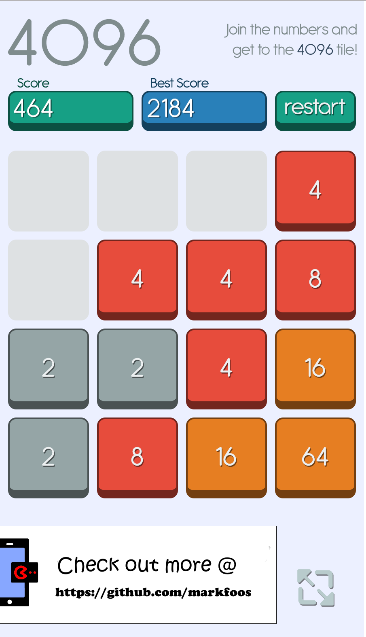

A Javascript Game
Built in Phaser
Part of a HTML5 cross platform build for Mobile Development. This course taken and completed at ASUMH. Project idea and game assets borrowed from Emanuel Eferonato. Visit emanueleferonato.com for more information.
Game design attributes include touch swipping or keyboard input for tile movement. Full screen mode. A high score button that is stored on the browser cache. Also included a custom logo at the bottom.